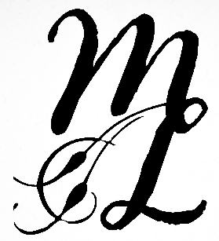

menu
Welcome to my little bio. Thanks for taking the interest in my background. So since you're here, let me give you the grand tour. My name is Matthew, and I'm currently looking into being a junior developer for a career change. Prior to this, I was an English teacher, and my time teaching with technology led me to seek further understanding of the technology I was using. I decided to transition more fully into the technological side and pursue web development. I saw my students needing But that's enough about the professional side of me, here's the good stuff. I'm one of the biggest nerds you'll meet. Star Wars, Marvel Comics, Steven Universe, pretty much anything that is considered "nerdy", either I grew up with it or have some passing familiarity with. I love learning about all of these things, and it helps fuel my imagination for what is possible. I'm also prepared to handle lots of different situations; it pays to be prepared. You'll find me with a bag full of useful items that get me through the day efficiently and without hassle. People have called my bag the TARDIS of carry-alls. They're not wrong.If this has interested you, and you want to know more, please contact me through any of my channels.